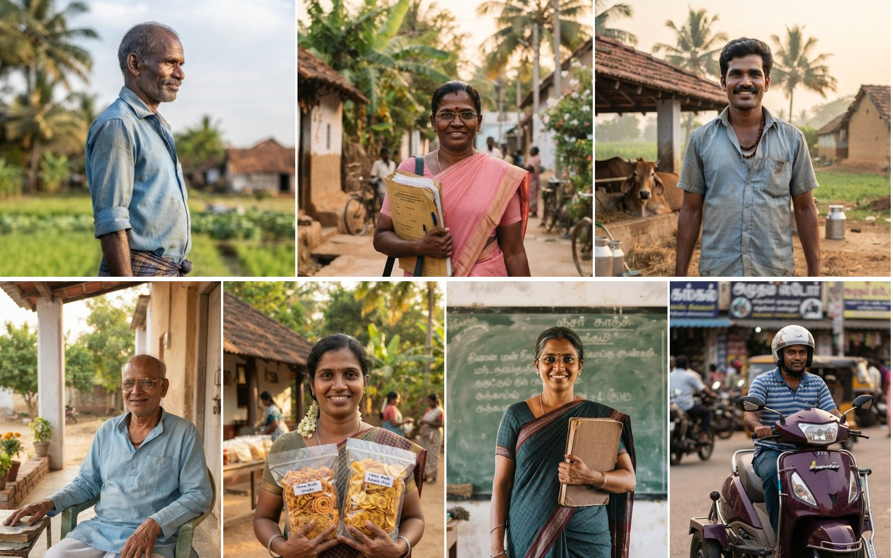
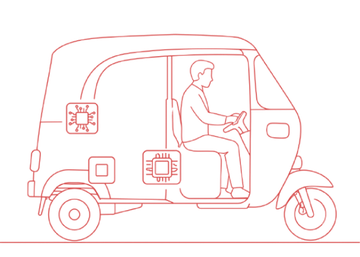
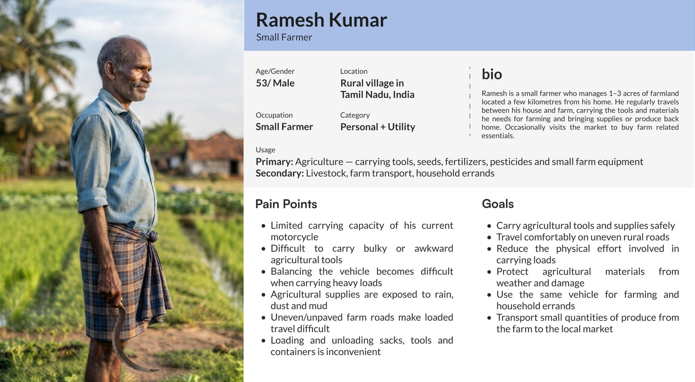
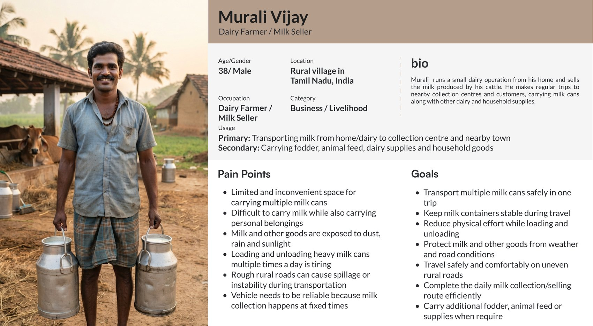
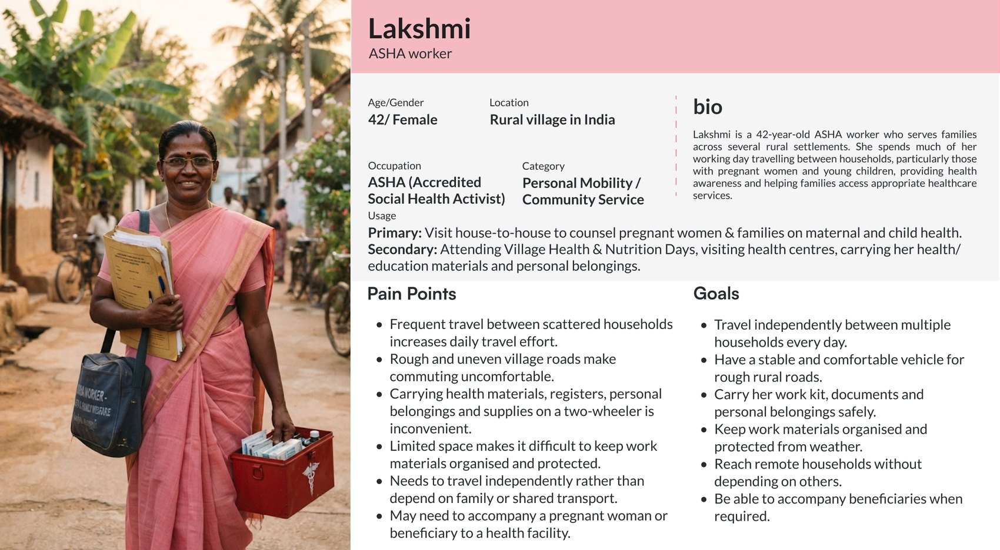
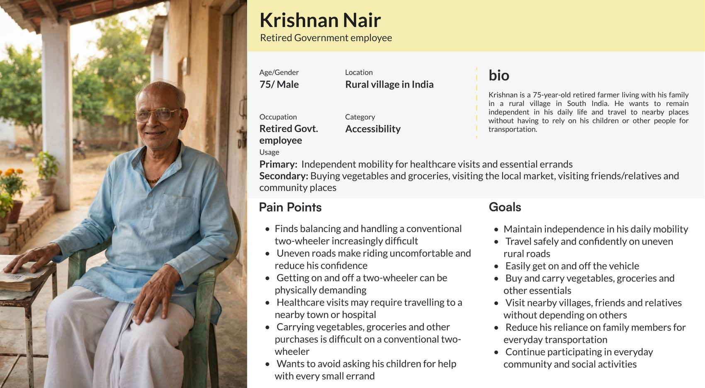
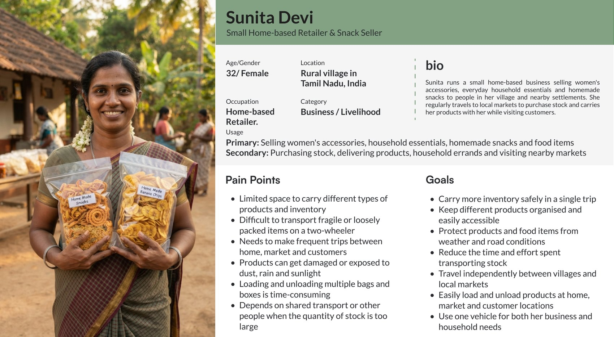
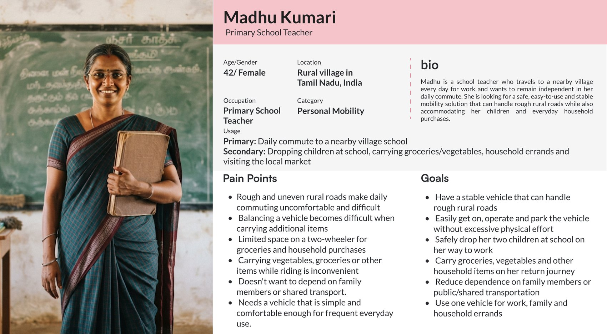
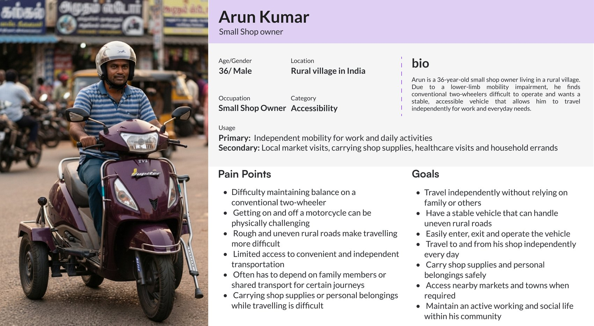

Takumi · tilting trike for rural India · internal briefing

Leans like a scooter. Carries like a cart. Earns its plate.
Who it serves
seven rural riders and what their two-wheeler cannot do
What it must pass
category, 45 tests, battery, kit duty, subsidy, every form
What we do first
ask the agency, measure, size, then prototype
DecisionApprove the targets (p. 15) and route D (p. 30); start at gate 1 (p. 35)
1
VisionFoundationProblemApprovalChoiceAskKick-off
One platform, one trike: proof on the road
Need
the builder says what the vehicle must do
Design
requirements, powertrain, chassis, wiring, safety, simulated first
Source
catalogue parts, partner design and kits, certified local vendors
Build
inspect, assemble, wire, commission, calibrate, road-test
Certify and register
agency tests, certificate, ID and number plate
Use and upgrade
service, updates, field data back into design
Why this vehicle firstIt touches every step once: a partner design, partner kits, an Indian build, a new category question and a real registration.
What it must proveThe chain holds on real Indian rules, from the first request to the plate on the road.
How to read itSeven steps, vision to kick-off, as in the tracker above. The dark step, certify and register, is mapped in full.
Takumi platform overview: design, source, build, operate and partner layers.
2
VisionFoundationProblemApprovalChoiceAskKick-off
The road to the plate: every step, rule and partner on one page
Steps follow the platform chain on p. 2. Rules, forms and partners are those on pp. 16 to 28. G0 to G4 are decision gates, go / no-go checkpoints (p. 35); terms are on p. 4. A stand-alone copy of this slide is Tilting_Trike_India_Whole_Map.jpg.
3
VisionFoundationProblemApprovalChoiceAskKick-off
The words on the map: what each term means
Gate (G0 to G4)
A go / no-go checkpoint with one question to close. G0 Decide · G1 Measure and ask · G2 Spec freeze · G3 Prototype · G4 Approval (p. 35).
L1 and L2
Two-wheeler classes. L1 is up to 4.0 kW and 70 km/h; L2 is a motorcycle above 4.0 kW.
L1-1
A proposed three-wheeled moped class (draft rule, June 2025): up to 45 km/h, 4 kW, 270 kg and 2 seats.
L5
The three-wheeler class of autorickshaws. It carries the heaviest tests.
The 460 mm rule
Two wheels side by side, 460 mm apart or less, count as one wheel (AIS-053). A trike with a narrow rear track can be a two-wheeler.
AIS
Automotive Industry Standard: the Indian rule documents for vehicles, for example AIS-053 (categories) and AIS-156 (batteries).
IS
Indian Standard, from the Bureau of Indian Standards (BIS), for example IS 16893 for battery cells.
CMVR
Central Motor Vehicles Rules, 1989: the rule book under the Motor Vehicles Act (MV Act).
Test agency
A body approved under CMVR rule 126 to test and certify vehicles: GARC (Oragadam), ICAT (Manesar), ARAI (Pune).
Type approval
The agency tests one model once. Its Certificate of Compliance then covers every vehicle of that model.
Vahan · e-RC · RTO
Vahan is the national vehicle registration portal; the e-RC is the electronic registration certificate; the RTO is the Regional Transport Office (Tenkasi is TN-76).
WMI
World Manufacturer Identifier: the first three characters of the vehicle ID number. They name Takumi as the maker.
Kit duty
Import duty on a vehicle brought in as a kit: 15 to 50 % depending on the kit.
IPX7
A water-protection rating: the part survives short immersion in water.
Definitions are plain-language summaries of AIS-053, CMVR rule 2(i) and rule 126, draft G.S.R. 416(E) (June 2025) and the BIS and Vahan sites. Where a term first appears on a diagram, it is the one defined here.
4
VisionFoundationProblemApprovalChoiceAskKick-off
Who we build for: seven people, three kinds of use
Ramesh Kumar
small farmer · 53
Personal + utilityMurali Vijay
dairy farmer, milk seller · 38
Business, livelihoodLakshmi
ASHA health worker · 42
Personal, community serviceKrishnan Nair
retired, government job · 75
AccessibilitySunita Devi
home retailer, snack seller · 32
Business, livelihoodMadhu Kumari
primary school teacher · 42
Personal mobilityArun Kumar
small shop owner · 36
AccessibilityPersonal use: 3 people
Accessibility: 2 people
Business and livelihood: 2 people
Also in the persona deck: vegetable, fruit and flower producers, bamboo and cane craftsmen, repair technicians, delivery operators, service providers, students, working professionals.
Rural Mobility Persona deck (team work), cards for the seven people shown; full cards in the appendix, p. 36. Four cards place the person in rural Tamil Nadu, three say rural India. The photographs are from that deck.
5
VisionFoundationProblemApprovalChoiceAskKick-off
Who raises what: seven riders, nine pains
Reading: the first two branches are everyone: every rider carries goods on rough roads. Accessibility and the second person are the smaller branches, but they decide the seat and the step. INT
Our count of pains and goals written on the seven persona cards (Rural Mobility Persona deck); the bars are on p. 7 and what each branch asks of the vehicle is on p. 8.
6
VisionFoundationProblemApprovalChoiceAskKick-off
What the seven share: the problem statement
How many of the seven raise itpains and goals
Carry goods
7 of 7
Rough roads
7 of 7
Stay stable
6 of 7
Not ask others
5 of 7
Weather cover
4 of 7
Easy on and off
3 of 7
Easy loading
3 of 7
One vehicle
3 of 7
Second person
2 of 7
DraftProblem statement NRM
In rural India, starting with Tamil Nadu, people rely on a two-wheeler that cannot carry what their work and family need, is hard to keep upright when loaded, old or impaired, and is rough on uneven roads.
They want one stable, easy-to-mount vehicle that carries goods and a second person under cover, so they can go where they need without asking anyone.
Reading: every card carries goods on rough roads. The ambulance story is one part of one card: Lakshmi's work is house-to-house visits, and accompanying a pregnant woman to a facility is one of her pains. INT
Our count of the pains and goals written on the seven persona cards (Rural Mobility Persona deck). Counted as raised when a card names it as a pain or as a goal; "stay stable" includes Lakshmi's goal of a stable vehicle.
7
VisionFoundationProblemApprovalChoiceAskKick-off
Pain to requirement: what the vehicle must do, and who owns it
| They need | The vehicle must | Team | Rule or evidence |
|---|---|---|---|
| Stay upright when loaded, old or impaired | stand on its own, lean in turns, hold with a parking lock | Hardware, Design | MFAIS-146 cl. 5.1: twinned wheels may skip the stand if the tilt tests pass. AIS-178 Annex A-2: a twinned-wheel two-wheeler can be treated as suitable for lower-limb disability without modification |
| Get on and off easily | step-through frame, low seat, hand-hold | Design | MFIS 14495 hand-hold. INTseat height not yet set |
| Carry cans, sacks, stock under cover | covered deck or box, tie-downs, a rated payload | Hardware, Design | MFreference deck is rated 30 kg; goods bed rule 0.41 m² (L1-1N). INTpayload per persona to be set in the field |
| Ride rough roads | suspension, tyres, ground clearance, hill start | Hardware | MF99.6 % of Tenkasi road length is 5 % or less sustained; steepest paved 12 %. AIS-003 gradeability |
| Take a second person: children, a beneficiary | seat for two, pillion fittings, helmets | Design | MFAIS-148, AIS-166, IS 14495, IS 4151 (two-wheeler mode) |
| Not depend on others | 50 km loaded, swappable packs, ready at fixed times | Hardware, Firmware | INTtarget on p. 15; AIS-040 range test |
| Keep dust and rain off goods and rider | cover, sealed battery pack | Hardware, Design | INTIPX7 pack target on p. 15 |
New in the list: payload. The India model on p. 11 carries a 15 kg kit; the personas carry several cans, sacks or bags. INT
Needs: Rural Mobility Persona deck. Rules: AIS-146, AIS-178 (Apr 2024) Annex A-2, AIS-003, AIS-148, AIS-166, AIS-040; Honda GYRO e: spec (30 kg on the deck); Tenkasi road gradients note. Teams are proposals, to confirm.
8
VisionFoundationProblemApprovalChoiceAskKick-off
Where it fits and who pays: six jobs ranked by the evidence
Health worker to the house
antenatal, postnatal and immunisation visits; state health missions already buy bikes for remote villages
Fish vending with an ice box
a national fisheries scheme lists a 3-wheeler with ice box at ₹3 lakh, up to 60 % paid for women
Milk collection
household to dairy society; two cans a trip (our estimate)
Feeder to the ambulance
bike units already do this; a labouring mother seated on a tilting trike is unproven
Farmers and small sellers
vegetables, flowers, pots to market; Madurai takes about 20 tonnes of jasmine a day
Village services
postmen, AI technicians, bank agents: one rider, light loads
Where it does not fitRivers, floods and snow
Slopes above 25 % with two aboard
A patient lying down
Loads above about 150 kg
Slopes above 25 % with two aboard
A patient lying down
Loads above about 150 kg
What buyers showHealth missions support 81 bike units; Tamil Nadu set aside ₹1.6 crore for 25.
Fleets idle when running costs are not funded: Maharashtra 2026, Karnataka.
Fleets idle when running costs are not funded: Maharashtra 2026, Karnataka.
Strongest objection: no budget line that buys outreach vehicles for health workers was found; health departments buy ambulances. We test the first job with the state health mission.
Rank and fit are our reading of the evidence; of 16 regions checked it fits in 6, partly in 4, fails in 6 (water, snow, footbridges). PMMSY guideline table (PIB) rows 46 to 48 · NHM emergency vehicle data · Live Chennai (Dec 2024) · Nagpur Today (Apr 2026) · Asianet (Jul 2026) · PARI (Madurai jasmine). Detail: Reference_Pack\07_Research_notes, Rural use cases.
9
VisionFoundationProblemApprovalChoiceAskKick-off
The idea: the front leans, the rear stays flat
Front leans into turns
a passive rubber-and-metal swing joint: nothing actively balances it
Rear deck stays level
a kit box does not tip in turns
Stands on its own
no foot down at stops · parking lock
Two swappable packs
motor between the rear wheels
The rear-wheel gap decides the law
460 mm or less counts as one wheel: a two-wheeler
Rear view · the 460 mm line
≤ 460 mm
"shall be considered as one wheel" → two-wheeler
> 460 mm
three-wheeler · where the reference sits
Honda GYRO e: press information (Mar 2021) · partner patent EP4144627B1, claim 1 (passive damper in the swing joint) · AIS-053 Amd cl. 3.12 · track 495 mm: GYRO CANOPY / GYRO X catalogue (Apr 2025); GYRO e: figure not published.
10
VisionFoundationProblemApprovalChoiceAskKick-off
Our starting point: a proven reference and a first India model
141 kg · 1 seat
1,945 mm long · 710 mm wide
96 V · two 48 V packs
about 4 h per pack to charge
0.58 kW rated · 3.2 kW peak
motor and differential between the rear wheels
85 km at 30 km/h
Honda GYRO e:, Japan moped class
| Japan reference | India duty | |
|---|---|---|
| Load · speed | 246 kg · 30 km/h | 306 kg · 45 km/h |
| Continuous motor | 0.58 kW | ≈ 1.6 kW (×2.8) |
| Range | 85 km | ≈ 51 km (−40 %) |
| Steepest hill, same wheel force | 15° | ≈ 12° |
| Evidence | MFHonda spec | INTour model |
The model: rolling 0.020, drag area 0.65 m², 75 % battery-to-wheel, 60 W accessories, 90 % usable battery. It reproduces Honda's 85 km. The ATMA drive-cycle simulation replaces it at the spec gate.
Honda GYRO e: press information (Mar 2021) pp. 3–5, 8, 11–12, 17; spec sheet Jun 2023 · Reference_Pack/07_Research_notes: india_duty_estimate. The 45 °C heat and IPX7 figures are targets, not measurements.
11
VisionFoundationProblemApprovalChoiceAskKick-off
Our evidence: the rules read, the roads measured
Standards read
AIS and IS, held locally
Test items
two-wheeler / three-wheeler
Regions checked
where the trike fits
Tenkasi roads: how steep5,474 km mapped
Wheel force at the climbing speed306 kg
Flat · 45 km/h
121 N
6 % · 25 km/h
259 N
12 % · 15 km/h
424 N
21 % · 8 km/h
678 N
Power stays 1.5 to 1.8 kW at every point.
Reading: 99.6 % of Tenkasi's road length is 5 % or less sustained; the steepest paved stretch is about 12 %. A hill asks for force at low speed, not more power. INT Not measured: short steep ramps (causeways, canal bunds, lanes). We measure them in the field at gate 1.
MFReference_Pack/07_Research_notes: Tenkasi road gradients (OpenStreetMap roads, SRTM terrain, 300 m window, bridges excluded) · Local standards extraction · Rural use cases. Wheel force from our road-load model.
12
VisionFoundationProblemApprovalChoiceAskKick-off
Rule documents we hold: law, approval and fittings (1 of 2)
| Document | What it covers | Where we use it |
|---|---|---|
| Category and law | ||
| AIS-053 Amd 1 to 7 | Vehicle categories L1, L2, L5; twinned wheels 460 mm (cl. 3.12) | The category line: 460 mm and 0.5 kW · p. 3, 10, 16 |
| G.S.R. 240(E) 2021 | CMVR rule 2(i): L1 up to 70 km/h and 4 kW | The 4.0 kW limit · p. 16, 17, 18 |
| AIS-177 Nov 2022 | Test list for L2 to L5: 51 rows | The 45 two-wheeler tests · p. 3, 17, 19 |
| AIS-178 Annex A-2 | Adapted vehicles; twinned-wheel definition | Lower-limb disability fit · p. 3, 8 |
| AIS-183 · 60th CMVR-TSC draft | Three-wheeled moped L1-1; L1-1 as part of L1 | Route A, and the wide module of route D · p. 16, 29, 30 |
| Approval and registration | ||
| AIS-017 Amd 1 to 3 · Part 6 | Type-approval procedure; conformity of production | Agency query (cl. 10), certificate, audits · p. 17, 19, 27 |
| AIS-007 Rev.5 Tables 1, 1C, 1D, 1E, 7A, 13 | Specification forms, the information document | The forms to fill (appendix) · p. 19, 27, 28 |
| AIS-037 Amd 1 to 11 | Safety-critical components: buy type-approved parts | Source step: lamps, mirrors, tyres, horn · p. 3, 19 |
| AIS-065 Amd 1 to 6 | Vehicle ID number (VIN) and statutory plates | Test item 10; the WMI · p. 19, 20, 27 |
| AIS-000 | How amendments take effect | Reading every other AIS |
| CMVR 1989 · HSRP advisory rule text; advisory | Central Motor Vehicles Rules; registration plates | Rule numbers in the 45 tests; the plate step · p. 3, 16, 17 |
| Safety fittings, part 1 | ||
| AIS-001 Pt 2 · AIS-002 Pt 2 Rev.1 | Mirrors: specification and installation | Test items 16, 17 · p. 20 |
| AIS-009 · AIS-010 Pt 1 to 5 · AIS-034 · AIS-057 Rev.1 | Lighting installation, lamps, bulbs, reflectors | Test items 34 to 40 · p. 20 |
| AIS-014 · IS 15796 · IS 1884 Amd 1 to 3 · 2008 · 1993 | Horn installation and horn performance | Test items 8, 9: buy a type-approved horn |
| AIS-044 Pt 3 · AIS-050 · IS 15627 · AIS-073 2005 · rims Pt 1 to 3 | Tyres and rims | Test items 3, 28 · p. 20 |
| IS 14664 · IS 7079 · IS 8654 2010 · 2008 · 2019 | Brakes; brake hose; brake fluid | Test items 4, 12, 13 · p. 20 |
| IS 11827 · IS 11825 · IS 14272 2008 · 1986 (older) · 2011 | Speedometer; weighment; vehicle terminology | Test items 7, 45, 49 · p. 20 |
Files: Reference_Pack folders 01 to 09, each with its sha256 in MANIFEST_sha256.tsv; the wider store is Primary_Sources (101 AIS and 6 IS PDFs). Test item n is a row of the AIS-177 Table 1 (p. 20); the page numbers after each row are the slides that cite the document. Older edition: the current one is not held.
13
VisionFoundationProblemApprovalChoiceAskKick-off
Rule documents we hold: electric, joint and reference (2 of 2)
| Document | What it covers | Where we use it |
|---|---|---|
| Safety fittings, part 2 | ||
| AIS-146 · AIS-147 · AIS-148 · AIS-166 | Stands; external projections; foot-rests; saree guard | Test items 20, 21, 22, 50; stand-free if tilt tests pass · p. 3, 8, 20 |
| IS 14495 · IS 4151 · AIS-058 Pt 1 1998 (older) · 2015 | Pillion hand-hold; helmets | Items 11, 46; the hand-hold shapes the rear frame · p. 3, 8, 20 |
| AIS-071 Pt 1, 2 · AIS-126 · AIS-074 | Tell-tales and controls; anti-theft | Test items 41, 43 · p. 20 |
| AIS-003 · IS 3028 1998 · Pt 1:2018 | Gradeability; pass-by noise | Test items 14, 30; the hill start · p. 8, 20, 21 |
| AIS-045 · AIS-046 · AIS-134 L5 only | Wipers; hand-hold; occupant safety | Three-wheeler mode only: not our route today · p. 20 |
| Electric and battery | ||
| AIS-049 Rev.1 · Amd 1, 2 | Electric vehicle type approval | Test item 29 · p. 20, 24 |
| AIS-156 Amd 1 to 5 | Traction battery safety; Annex 8K for cells | Test items 27, 44; the battery path · p. 3, 17, 19 |
| AIS-039 · AIS-040 · AIS-041 Rev.1 | Energy consumption; range and drive cycle; motor power | Test items 31 to 33; the range target · p. 8, 20 |
| AIS-137 Pt 1, Pt 2 Amd 1 to 4 | WMTC cycle (two-wheeler); Indian Driving Cycle (three-wheeler) | The drive cycle for each mode · p. 17 |
| AIS-004 Pt 3 Rev.1 · Amd 1, 2 | Electromagnetic compatibility | Test item 42 · p. 20 |
| AIS-138 Pt 1, 2 · IS 17017 Pt 1 IS 17017:2018 | AC and DC charging; EV charging | Charger and charging inlet |
| Maternal care, joint, reference vehicle | ||
| AIS-125 Pt 1, 2 · AIS-209 Pt 1, 2 Amd 1 to 5 | Road ambulances and Type A first responder; two-wheeled ambulance; equipment lists | Maternal-care use: not an ambulance; first-responder rules only if used for emergencies |
| AIS-079 Dec 2005 | Rubber-to-metal bonded components | The swing-joint test · p. 3, 19, 21 |
| Honda GYRO e press information 2021 | Spec p. 17, dimension drawing, spec table | Reference vehicle: 216 kg, rear track · p. 8, 10, 11 |
Not held yet: IS 16893 Part 2 and 3 (to buy) · IS 14495:2024 and IS 11825:2023 (current editions) · AIS-103, AIS-159, AIS-048.
Files: Reference_Pack folders 01 to 09, each with its sha256 in MANIFEST_sha256.tsv; the wider store is Primary_Sources (101 AIS and 6 IS PDFs). Test item n is a row of the AIS-177 Table 1 (p. 20); the page numbers after each row are the slides that cite the document. Older edition: the current one is not held.
14
VisionFoundationProblemApprovalChoiceAskKick-off
Root cause: spec and category are one decision · so we fix the Indian target first
Problem
Which rules must it pass? Unknown.
Why?
Category not fixed.
Why?
On two borders: 495 vs 460 mm · 0.58 kW vs 0.5 / 4 kW.
Why?
No Indian rule for tilting trikes; L1-1 still a draft.
Why?
Japanese duty ≠ Indian duty: the drive changes anyway.
Root cause
Define the Indian vehicle, then pick the category it fits.
Proposed India targets
Seats
Top speed
km/h
Continuous motor
kW, peak ≤ 4
Range loaded
km at 45 km/h
Hill, loaded
21 % grade
Battery
submersion
Hot day
ambient
Category
agency letter
15
VisionFoundationProblemApprovalChoiceAskKick-off
Two numbers place it in law: rear-wheel gap and motor power
CMVR rule 2(i), G.S.R. 240(E) 2021 · AIS-053 cl. 3.6, 3.12, 3.14 · AIS-183 cl. 3.3 · draft G.S.R. 416(E) 2025. Category names (L1, L2, L1-1, L5) are explained on p. 4.
16
VisionFoundationProblemApprovalChoiceAskKick-off
Where the rules give us room: what each limit buys
Rear wheels ≤ 460 mm apart
count as one wheel → two-wheeler
Pack ≤ 60 V DC
shock-protection block drops · pack tests stay
Motor ≤ 4 kW, ≤ 70 km/h
stays L1 · above 4 kW is L2
Buy type-approved parts
lamps, mirrors, tyres, rims: only vehicle tests are ours
Under 250 vehicles per 6 months
production test once a year
Under 25 km/h and 0.25 kW
closed door: even empty, it needs 0.32 kW
What does not change: the test count
What does changeLicence: gearless motorcycle
Range test: WMTC cycle, not the auto cycle
Production test: two-wheeler family
Incentive: e-2W approved list
Rules: in force, not draft
Range test: WMTC cycle, not the auto cycle
Production test: two-wheeler family
Incentive: e-2W approved list
Rules: in force, not draft
Strongest objection: no agency has ruled on a tilting trike, and 460 mm means about −35 mm of track. We ask in writing at gate 1.
AIS-053 Amd 5 cl. 3.12, cl. 3.6, 3.9 · CMVR rule 2(i), G.S.R. 240(E) · AIS-156 cl. 2.20, 5.1.1.2 · AIS-177 Table 1 · AIS-017 Pt 6 cl. 2.9, rule 126A. Closed-door figure: our road-load model, 25 km/h on the flat.
17
VisionFoundationProblemApprovalChoiceAskKick-off
The power question: 1.5 kW needed, limits of 0.5 and 4.0
Reading: under a 0.5 kW limit a loaded 306 kg trike tops out near 23 km/h on the flat; the 4.0 kW limit leaves room for hills. Which limit the agency applies to a narrow trike is the question we ask in writing (p. 33). INT
MFLimits: AIS-053 and CMVR rule 2(i), G.S.R. 240(E) 2021. INTCurves: our road-load model, F = m g (Crr cos θ + sin θ) + ½ ρ CdA v², Crr 0.020, CdA 0.65 m², ρ 1.2 kg/m³; 306 kg is vehicle 141 + two riders 150 + kit 15; the reference is 216 kg. Power at the wheel, not at the battery.
18
VisionFoundationProblemApprovalChoiceAskKick-off
Before the first sale we hold nine certificates and checks
ACompany
incorporationVIN prefix (WMI)AIS-065
BAsk the agency
category, in writingtilting itemsAIS-017 cl. 10
CParts
buy approved partsAIS-037lamps · tyres · horn
DBattery
cells IS 16893pack + BMS AIS-156EPR · CPCB
EVehicle type approval
45 test itemsAIS-177 · AIS-007Certificate of Compliance
FSwing joint
no standardAIS-079 test borrowedagency decides
GFactory
production auditevery 2 yearsAIS-017 Pt 6
HEach vehicle
Form 22 · 21 · 20number platee-RC, Form 23A
ISale and use
helmet · kitsinsurancegearless licence
45 test items as a two-wheeler, 43 as a three-wheeler
Agency fees ₹12 lakh (2W) · ₹26 lakh (3W) in 2020: a floor
2 standards to buy: IS 16893 Part 2 and 3, ₹890 in all; none blocks the pitch
AIS-017 · AIS-177 Table 1 · AIS-037 · AIS-156 · AIS-065 · AIS-079 · MV Act s.110B · rules 47, 48, 50, 126A, 138. Fees and time: EVreporter (Mar 2020), before AIS-156. Detail: Reference_Pack\07_Research_notes, Certification master list.
19
VisionFoundationProblemApprovalChoiceAskKick-off
The 45 test items, by system and by team
7Brakes, tyres, wheels
IS 14664 brakesABS or CBSIS 15627 tyresAIS-073 rims
Proposed owner: Hardware
9Lights and signalling
AIS-009 fittingAIS-010 lightAIS-034 bulbsAIS-057 reflectors
Proposed owners: Hardware, Design
7Controls, mirrors, horn, theft
AIS-126 tell-talesspeedometerAIS-001 / 002 mirrorshornAIS-074 anti-theft
Proposed owners: Firmware, Design
8Power-train, battery, range
AIS-156 batteryAIS-049 EV approvalAIS-039 / 040 / 041AIS-004 EMCAIS-003 hill
Proposed owners: Hardware, Firmware
8Rider and passenger fittings
IS 14495 hand-holdAIS-148 foot-restsAIS-166 saree guardAIS-146 standhelmet at sale
Proposed owner: Design
6Identity, size, noise, mass
AIS-065 VINoverall sizeIS 3028 noiseIS 11825 weighingAIS-103 spray
Proposed owners: Design, Compliance
Two-wheeler mode onlyhand-hold, stand, foot-rests, saree guard, helmet, spray suppression, ABS or CBS
Three-wheeler mode onlyturning circle, seat standard, wipers, glass, hand-hold (AIS-046), accelerator control
MF The rows come from the AIS-177 table. NRM The owners are a starting proposal for the teams to confirm.
AIS-177 (Nov 2022) Table 1, columns (5) and (6), recounted: 45 items in two-wheeler mode (ABS and CBS rows counted once), 43 in three-wheeler mode, 37 in both. Detail: Reference_Pack/07_Research_notes, Certification master list.
20
VisionFoundationProblemApprovalChoiceAskKick-off
The swing joint has no rule of its own, so we borrow a test
1What Indian rules say
Lean, standstill and parking stabilityno standard
Parking: twinned wheels may skip the stand if they pass the tilt-platform test (AIS-146)helps us
Hill start (AIS-003)applies
2AIS-079, borrowed as the test
Stiffness against the declared value± 15 %
72 h heat soak, stiffness change70 °C · ≤ 20 %
Fatigue, at least 10 samples10⁶ cycles
Rubber-to-metal bond strengthpull test
3Asks of the partner
Roll stiffness curveN·m per degree
Rubber compound and pre-loaddata sheet
Rated temperature: standing model −5 to 40 °CIndia 45 °C+
Life targetcycles → km
Strongest objection: AIS-079 was written for engine and cab mounts, and no type-approval rule we hold calls it. The agency may accept it as the test method, or ask for more. We ask at gate 1.
AIS-079 (Dec 2005) cl. 1, 5.2, 5.4, Annex I: "recommended for safety related components". AIS-146 · AIS-003 · LSE note: no local standard covers tilt. Searched the other 115 local regulation PDFs: none cites AIS-079. Standing-model temperature range: partner's published spec.
21
VisionFoundationProblemApprovalChoiceAskKick-off
Testing the swing joint: ask first, then four checks
Strongest objection: AIS-079 was written for engine and cab mounts, and no type-approval rule we hold calls it. The agency may accept it as the test method, or ask for more. We ask at gate 1.
MFAIS-079 (Dec 2005) cl. 1, 5.2, 5.4, Annex I: "recommended for safety related components" · AIS-146 · AIS-003. The four checks are listed, not ordered: the standard's own test sequence is not shown here.
22
VisionFoundationProblemApprovalChoiceAskKick-off
Six things sit outside the test table
Partner kit duty
two-wheeler kit: 15 % loose, 25 % if parts are joined, 50 % if more built
An imported kit and the grant
the central grant bars imported battery modules and needs motor, controller, charger and the main parts made in India
Parts carrying a BIS mark
tyres, tubes, rims, safety glass and helmets carry it; for imports, expect the maker to need a BIS licence
Shipping the packs
UN 38.3 test, charged to 30 % or less; battery waste registration (Form 1(A)) once we sell
Bluetooth in the battery or meter
radio approval (WPC), and a security test for the battery manager in AIS-156 Amd 5
Recall and penalty
a maker that breaks the vehicle-standards chapter can be fined up to ₹100 crore
What we do not needTracking device (AIS-140): not for two- or three-wheelers
Pedestrian alert, cyber and update rules: drafts, not for this class
BIS registration for the charger: none listed
Pedestrian alert, cyber and update rules: drafts, not for this class
BIS registration for the charger: none listed
Worth checkingJune 2026 rule 126 change: up to 2,500 imported L-category units a year count as compliant on an EU or Japanese approval. It helps only if the partner holds one.
Customs notification 45/2025, entry 329 · PM E-DRIVE phased manufacturing programme (Mar 2025) · BIS compulsory-marking list (2025) · IATA battery guidance 2026 · Battery Waste Management Rules 2022 · AIS-156 Amd 5 · MV Act s.110A, s.182A · CMVR Ninth Amendment, G.S.R. 458(E) (secondary copy). Detail: Reference_Pack\07_Research_notes, Beyond type approval.
23
VisionFoundationProblemApprovalChoiceAskKick-off
The battery path: two certificates before the vehicle test
Strongest objection: the cell certificate and the pack approval can come from the supplier. If we buy a certified pack, our own work is the vehicle tests and the Form 1(A) registration.
MFAIS-156 Amd 1 to 5, Annex 8K (cells certified to IS 16893 Part 2 and 3; 1 cycle at C/3; pressure vent), cl. 2.20 (60 V DC) · Approval and RTO path §1 steps 6 to 8 · Beyond type approval (UN 38.3, WPC, Form 1(A)). Time and cost for the pack tests are not established. IPX7: water immersion rating; WPC: radio licensing wing of the telecom ministry.
24
VisionFoundationProblemApprovalChoiceAskKick-off
Government money is small, so we plan without it
Central grant, two-wheeler (L1, L2)
needs range ≥ 80 km, speed ≥ 40 km/h, local motor and pack, 25 dealers in 2 states · to Mar 2028
e-rickshaw and e-cart
≤ 25 km/h, ≤ 2 kW, hire or goods only · to Mar 2028
Three-wheeler at road speed
L5 line closed in Dec 2025; L1-1 is not a scheme category
Tamil Nadu road tax
all battery vehicles, to 31 Dec 2027
Delhi, Maharashtra purchase grants
buyers in those states only: Delhi up to ₹30,000, Maharashtra up to ₹10,000
Tamil Nadu purchase grant
commercial grant ended 31 Dec 2025; maker package needs ₹50 crore investment
For the makerStartup India Seed Fund: up to ₹20 lakh for prototype and trials, through an incubator, company under 2 years old.
For the buyersMUDRA loans cover commercial two- and three-wheelers. The fisheries scheme pays up to 60 % for women on a 3-wheeler with ice box.
Strongest objection: the one central grant is ₹5,000 at most, and it asks for 80 km range where our target is 50 km. We keep top speed at 40 km/h or more so the door stays open, and we do not size the business on it.
PM E-DRIVE: S.O. 4424(E) 10-8-2026, S.O. 4259(E) Annexure 3, S.O. 1617(E) · Tamil Nadu EV Policy 2023 and road-tax notification (press) · Delhi EV Policy 2026 · Maharashtra EV Policy 2025 (state agency summary) · Startup India Seed Fund guidelines · mudra.org.in · PMMSY guideline table. Detail: Reference_Pack\07_Research_notes, Subsidies and incentives.
25
VisionFoundationProblemApprovalChoiceAskKick-off
Do we get the central grant? Four questions
Reading: today we leave the grant at the third question: our 50 km target is below its 80 km condition. We keep the top speed at 40 km/h or more so the door stays open, and we plan without the money (p. 25). INT
MFPM E-DRIVE: S.O. 4424(E) 10-8-2026, S.O. 4259(E) Annexure 3 · phased manufacturing programme (Mar 2025) · Tamil Nadu EV Policy 2023 and road-tax notification. Reference_Pack/07_Research_notes: Subsidies and incentives, Beyond type approval.
26
VisionFoundationProblemApprovalChoiceAskKick-off
From finished prototype to a plate on the road
MFApproval and RTO path §1, §2: AIS-017 and Part 6 · AIS-007 Rev.5 · AIS-065 · AIS-156 · rules 47, 48, 50, 126A · G.S.R. 240(E) 2021 and 703(E) 2022 · MV Act s.110B. INTThe order of the preparation steps is our reading. No source we hold gives time or cost for today (a 2020 report says 2 to 3 months, before AIS-156). Terms: p. 4; every form: p. 28.
27
VisionFoundationProblemApprovalChoiceAskKick-off
The forms: who files what, in which order
1 · Set upbefore the application
2 · Approvetype approval
3 · Selldealers and stock
4 · Registereach vehicle
Takumi
incorporation · VIN prefix (WMI) · spec file AIS-007 (Table 1, 7A, 13)
application · prototype to the agency · upload the certificate to Vahan
Form 16A to each dealer · Form 22 per vehicle
plate fitted by maker or dealer
Agency
written category answer
type tests · Certificate of Compliance, 2 originals
production audit every 2 years
Dealer
trade certificate Form 16 → 17 · Form 21 sale certificate
Form 20 on Vahan, before delivery
RTO
e-RC Form 23A · fitness Form 38 if hired
Other offices
battery waste Form 1(A), CPCB · customs entry for kits
WPC radio approval · BIS marks on parts
Per vehicle: Form 22 → 21 → 20 → plate → e-RC
Tenkasi: RTO Tenkasi (TN-76) and RTO Sankarankoil (TN-79)
Fees ₹12 lakh (2W) · ₹26 lakh (3W) and 2 to 3 months: a 2020 floor
MFAIS-017 · AIS-007 Rev.5 · AIS-065 · CMVR rules 47, 48, 50, 126A · G.S.R. 703(E) 2022 · G.S.R. 240(E) 2021 · Battery Waste Management Rules 2022. Form 38 title and Vahan class names for L1 not confirmed. Detail: Reference_Pack/07_Research_notes, Approval and RTO path.
28
VisionFoundationProblemApprovalChoiceAskKick-off
Three routes weighed: A, B and C
AThree-wheeled moped (L1-1)
Keep the original rear track and register as a three-wheeled moped, capped at 45 km/h.
keeps 495 mmlaw is a draft (Jun 2025)45 km/h cap
Falls short: it is not law yet, so we cannot register it today.
BNarrow two-wheeler (L1)
Narrow the rear track by about 35 mm to 460 mm, so the twinned wheels count as one wheel.
law in force (Apr 2021)up to 70 km/htrack −35 mm
Falls short: less stable when loaded, and a goods version is limited.
CThree-wheeler (L5)

Register in the autorickshaw class and follow its rule book.
law in forceauto rule bookheaviest tests
Falls short: the heaviest test set, written for a different kind of vehicle.
What none of them does aloneA waits for a draft rule. B limits goods. C is heavy to approve. Route D joins B now with A later, and is on the next page (p. 30).
Categories (L1, L1-1, L5) are explained on p. 4. AIS-053 cl. 3.6, 3.12 · AIS-183 · AIS-177 · CMVR rule 2(i) G.S.R. 240(E) · draft G.S.R. 416(E) (L1-1). The rear track of the reference trike is about 495 mm (GYRO catalogue). The comparison against our targets (p. 15) is on the next page.
29
VisionFoundationProblemApprovalChoiceAskKick-off
Final choice, route D: one platform, two rear modules
Narrow module · now
L1 two-wheeler · 2 riders · hire allowed by states
+
Wide goods module · later
L1-1N when notified · bed ≥ 0.41 m², ≤ 300 kg
| Against the targets | A | B | C | D |
|---|---|---|---|---|
| Law in force today | △ | ◎ | ◎ | ◎ |
| 2 seats · 45 km/h · 1.7 kW | ◎ | ◎ | ○ | ◎ |
| Passenger for hire | △ | ○ | ◎ | ○ |
| Goods version | ○ | △ | ◎ | ○ |
| Emergency maternal use (0–70 km/h in 40 s) | × | △ | △ | △ |
◎ with margin · ○ meets · △ with conditions · × fails as written
Why DLaw in force · targets fit L1 · nothing lost when L1-1 arrives
Strongest objectionThe agency may still call it a three-wheeler · 460 mm is less stable when loaded
Why it survivesAgency letter at gate 1 · loaded stability test at gate 3 · fall back to A or C
A, B and C are on p. 29; gates are on p. 35. AIS-053 cl. 3.6, 3.12 · AIS-183 · AIS-177 · CMVR rule 2(i) G.S.R. 240(E) · draft G.S.R. 416(E) (L1-1). Ratings are our reading against the targets on p. 15.
30
VisionFoundationProblemApprovalChoiceAskKick-off
What could stop us, and what we do not know yet
Reading: seven of the ten close at gate 1, which is cheap. The commercial case is the one we cannot close from desk research. INT All five gates are on p. 35.
Reference_Pack/07_Research_notes: Approval and RTO path §6 · Reference vehicle (BeiGo X4) · Striemo off-road model, patents and partner package · Subsidies and incentives · Tenkasi road gradients · Tenkasi rural operating environment.
31
VisionFoundationProblemApprovalChoiceAskKick-off
Recommendation: adopt route D, and ask before we build
1 · Lead with the persona problem statement (p. 7): carrying, balance, independence
2 · Adopt the India targets and route D: narrow L1 now, wide L1-1N later
3 · Ask the agency in writing before any prototype spend
4 · Partner: paid feasibility plus an option to license, not a design handover
5 · Plan without the subsidy; keep top speed at 40 km/h or more
6 · Check the personas in the field: payload, trips, who pays
Strongest objectionNo agency has ruled on a tilting twinned-wheel trike, and we have no cost or demand case yet. We could spend months on a vehicle that is classed as a three-wheeler.
Why the recommendation survivesGate 1 is cheap and buys exactly these answers. If the letter says three-wheeler, we fall back to route A or C before any hardware is built.
Next actionSend the written agency query and measure the reference rear track: gate 1 on p. 35.
NRMThis is a recommendation, not a decision. Evidence behind it: the rules on pp. 16 to 28, the risks on p. 31.
32
VisionFoundationProblemApprovalChoiceAskKick-off
The ask: six things we do not have yet
1Decisions
India targets and route D
top speed: 45, or up to 70 km/h
partner structure
imported kit or locally made
From: CEO, project management
2Measurements
rear track of the reference vehicle
deck size and mass
payload and trip length for each persona
short steep ramps on Tenkasi roads
From: Hardware, Design
3From the partner
roll stiffness, damping, rubber compound, pre-load
temperature range and life target
frame drawings and mass
legal name, NDA and licence terms
From: partner, via project management
4From the agency, in writing
how it reads twinned wheels
L1 power limit: 0.5 or 4 kW
tilt evidence; is AIS-079 accepted
prototype on public roads
first-responder 0–70 km/h clause
From: Compliance
5Standards to buy
IS 16893 Part 2 and Part 3, the cell standards
₹370 + ₹520 = ₹890 on the BIS e-store
which edition applies: ask the agency
list and prices on p. 34
From: Compliance
6Numbers we lack
agency fee and time today (2020 floor only)
pack test cost
vehicle cost, price and volume
demand for each job
From: project management
Reference_Pack/07_Research_notes: Certification master list §4, §6 · Approval and RTO path §7 retrieval queue · Striemo partner package · Subsidies and incentives. Proposed sources are a starting point to confirm.
33
VisionFoundationProblemApprovalChoiceAskKick-off
Standards to buy: two cell standards, ₹890 in all
IS 16893 Part 2
cell reliability and abuse tests
IS 16893 Part 3
cell safety requirements
Both, 2026 editions
BIS e-store, price within India
| Standard | Covers | Why we need it | Price |
|---|---|---|---|
| IS 16893 Part 2 (2026) | lithium-ion cells: reliability and abuse tests | MFAIS-156 Annex 8K: cells must be certified to both parts, by a lab accredited by NABL (the national accreditation board for test labs) or by a rule-126 test agency | ₹370 |
| IS 16893 Part 3 (2026) | lithium-ion cells: safety requirements | ₹520 |
Where to buy: the BIS e-store itself. Resellers list IS 16893 Part 2 (2018) at ₹3,400 against ₹340 on the BIS e-store.
Which edition: ask the agency. The 2018 pair costs ₹710 and is valid to 26 November 2026; the 2026 pair costs ₹890. INTBuy the one the agency names.
BIS e-store (standardsbis.bsbedge.com), "price within India", read 2026-10-04; AIS-156 Amd 1 to 5, Annex 8K. Price not yet found for ARAI documents AIS-103, AIS-159 and AIS-048.
34
VisionFoundationProblemApprovalChoiceAskKick-off
Five gates to approval: we start at gate 1
What a gate is: a go / no-go checkpoint with one question to close. The next phase starts only when the question is closed (risks on p. 31).
Done so far: rules, forms and the 45 test items mapped · 40+ standards read · Tenkasi roads measured (5,474 km) · persona problem statement (p. 7).
Gate plan: Reference_Pack/07_Research_notes (Approval and RTO path; Certification master list). The agency query and the road measurements come first; nothing has been sent yet.
35
Appendix · persona card 1 of 7 · Rural Mobility Persona deck

What it asks of the vehicle: carry bulky tools and produce, stay balanced under load, keep it dry. INT
36
Appendix · persona card 2 of 7 · Rural Mobility Persona deck

What it asks of the vehicle: several milk cans stable in one trip, cover from dust and sun, ready at fixed times. INT
37
Appendix · persona card 3 of 7 · Rural Mobility Persona deck

What it asks of the vehicle: kit and registers organised and dry, stable on rough lanes, able to accompany a beneficiary. INT
38
Appendix · persona card 4 of 7 · Rural Mobility Persona deck

What it asks of the vehicle: step in and out easily, stay upright without balancing, carry groceries, reach the hospital. INT
39
Appendix · persona card 5 of 7 · Rural Mobility Persona deck

What it asks of the vehicle: more stock in one trip, fragile goods protected, easy loading and unloading. INT
40
Appendix · persona card 6 of 7 · Rural Mobility Persona deck

What it asks of the vehicle: stable with two children and groceries, easy to park, simple for daily use. INT
41
Appendix · persona card 7 of 7 · Rural Mobility Persona deck

What it asks of the vehicle: stable without balancing, easy entry and exit, carry shop supplies; see AIS-178 Annex A-2. INT
42
Appendix · forms to fill · AIS-007 Rev.5
The forms we fill for the vehicle: which table is which
| Table | Form for | Rows | In this deck |
|---|---|---|---|
| Table 7A | Brief technical specification, L1, L2 and L5 | 123 | shown in full on the next slides |
| Table 13 | Technical specification, battery-operated vehicles | 157 | shown in full after Table 7A |
| Table 1 | Technical specification of L1 and L2 vehicles (the full information document) | 981 | Word file; sections below |
| Table 1C | Information for L5 and L7 vehicles (three-wheelers) | 1051 | Word file; three-wheeler route only |
| Table 1D | L5 additions for BS VI norms (engine and emissions) | 454 | Word file; three-wheeler route only |
| Table 1E | Retrofitter's information, two-wheeled first responder | 31 | Word file; only if used as a first responder |
Table 1, sections (rows): 0.0 General information (27) · 1.0 General construction characteristics (32) · 2.0 Masses and dimensions (24) · 3.0 General powertrain characteristics (364) · 4.0 General information on environmental and propulsion performance (92) · 5.0 Vehicle propulsion family (2) · 6.0 Information on functional safety (271) · 7.0 Information on vehicle construction (156) · 8.0 Details of compliance as per AIS-120 mentioned in Clause 5.1.1 of AIS-147. (4) · 10.0 Firefighting System (if fitted) (6) · 11.0 Any other features manufacturer desires to declare (1). INTMost rows of sections 3.0, 4.0 and 6.0 describe engines, fuel and exhaust; an electric vehicle answers them "not applicable", and the agency tells us which to complete.
MFReference_Pack/02_Approval_and_registration: AIS-007 Rev5 Table 1, 1C, 1D, 1E, 7A and 13 (Word files, copied from the Primary_Sources store). The value columns on the next slides are empty on purpose: nothing is filled in.
43
Appendix · form to fill 1 of 7 · AIS-007 Rev.5 Table 7A, brief technical specification, L1 L2 L5
Brief specification: Table 7A (part 1 of 7)
| No. | Item | Our value |
|---|---|---|
| 1 | Manufacturer’s name and address | |
| 2 | Importer’s name and address (in case of CBU) | |
| 3 | Vehicle data: | |
| 3.1 | Base Model Name | |
| 3.1.1 | Base Model Name to be Printed on RC / (Max. limit 30 Characters as per VAHAN Portal) | |
| 3.1.2 | Body Type / Description (as per IS 14272/ any other) | |
| 3.1.3 | Category of vehicle as per IS 14272:2011 | |
| 3.2 | Variant(s) Name | |
| 3.2.1 | Variant(s) Name to be Printed on RC / (Max. limit 30 Characters as per VAHAN Portal) | |
| 3.2.2 | Body Type / Description (as per IS 14272/ any other) | |
| 3.2.3 | Category of variant(s) as per IS 14272:2011 | |
| 3.3 | Type of Fuel / Gasoline (E20)/ Diesel/ Flex Fuel Vehicle (E20-E85) / Flex Fuel Vehicle (E20-E100) / CNG (Dedicated/ Bi-fuel/ Dual Fuel)/ LPG (Dedicated/ Bi-fuel/ Dual Fuel)/ LNG (Dedicated/ Bi-fuel/ Dual Fuel)/ Hydrogen (Fuel Cell/ ICE)/ BIO-CNG/ Pure Electric Vehicle (PEV). If Any Other-specify | |
| 3.4 | Type of Hybrid (hybrid electric vehicle (HEV)/ Plug-in HEV/ Series HEV/ Series Parallel HEV/ Strong HEV) (If Applicable) | |
| 4 | Powertrain | |
| 4.1 | Engine | |
| 4.1.1 | Make | |
| 4.1.2 | Model name / identification | |
| 4.1.3 | Type |
44
Appendix · form to fill 2 of 7 · AIS-007 Rev.5 Table 7A, brief technical specification, L1 L2 L5
Brief specification: Table 7A (part 2 of 7)
| No. | Item | Our value |
|---|---|---|
| 4.1.4 | No. of cylinders | |
| 4.1.5 | Displacement (cm3) | |
| 4.1.6 | Max. Engine output (kW @ rpm) | |
| 4.1.7 | Max. Torque (Nm @ rpm) | |
| 4.2 | Details of Alternate Fuel Supply System | |
| 4.2.1 | Name of the Kit Manufacturer / Supplier / Installer | |
| 4.2.2 | Gas Kit Identification No. | |
| 4.2.3 | Fuel system (Dedicated/ Bi-Fuel/ Dual Fuel/ Dedicated Dual Fuel) | |
| 4.2.4 | Type of Dual-fuel system (Type 1A/ 1B/ 2A/ 2B/ 3B) | |
| 4.2.5 | Cylinder Details | |
| 4.2.5.1 | Make | |
| 4.2.5.2 | Identification No. | |
| 4.2.5.3 | Cylinder capacity (Water Equivalent) (Litres) and diameter (mm) | |
| 4.2.5.4 | Number of Cylinders fitted (Schematic drawing) | |
| 5.0 | Details of Electric Vehicle Powertain | |
| 5.1 | Traction Motor | |
| 5.1.1 | Make | |
| 5.1.2 | Maximum Net Power (kW) @ (min –1) or (km/h) | |
| 5.2 | Traction Battery Pack | |
| 5.2.1 | Make and Trade name |
45
Appendix · form to fill 3 of 7 · AIS-007 Rev.5 Table 7A, brief technical specification, L1 L2 L5
Brief specification: Table 7A (part 3 of 7)
| No. | Item | Our value |
|---|---|---|
| 5.2.2 | Kind of Electro – Chemical Chemistry | |
| 5.2.3 | Battery Energy (kWh) | |
| 5.2.4 | Battery provision / (Fixed/ Swappable) | |
| 6.0 | Charger | |
| 6.1 | Portable charger provided (Yes /No) | |
| 7 | Transmission | |
| 7.1 | Gear box | |
| 7.1.1 | Make | |
| 7.1.2 | Type | |
| 7.1.3 | No. of gears (Forward and Reverse) | |
| 8 | Default Mode / / Additional Drive Mode Options (e.g. Normal, Eco, Sport. Etc.) | |
| 9 | Steering | |
| 9.1 | Type/ Description (Manual/ Power assisted – Hydraulic/ Power assisted – Electric/ Other) | |
| 10 | Suspension | |
| 10.1 | Type | |
| 10.2 | Front | |
| 10.3 | Rear | |
| 11.0 | Brakes | |
| 11.1 | Service brake Type (Mechanical/ Hydraulic/ Air/ Air Assisted/ Vacuum Assisted/ Others) | |
| 11.2 | Auto Slack Adjuster Fitted (Yes/ No/ Optional) |
46
Appendix · form to fill 4 of 7 · AIS-007 Rev.5 Table 7A, brief technical specification, L1 L2 L5
Brief specification: Table 7A (part 4 of 7)
| No. | Item | Our value |
|---|---|---|
| 11.3 | Anti-Lock braking system Provided (Yes/ No/ Optional) | |
| 11.4 | Front (Disc/ Drum) | |
| 11.5 | Rear (Disc/ Drum) | |
| 11.6 | Parking brake type | |
| 12 | Wheels and tyres | |
| 12.1 | Wheel rim size | |
| 12.1.1 | Front | |
| 12.1.2 | Rear | |
| 12.1.3 | Spare wheel (Other than temporary use spare wheel) | |
| 12.2 | Tyre size designation including ply rating | |
| 12.2.1 | Front | |
| 12.2.2 | Rear | |
| 12.2.3 | Spare wheel (Other than temporary use spare wheel) | |
| 12.3 | Spare wheel / Temporary use spare wheel / Tyre Repair Kit / RFT- as per AIS-110 | |
| 12.4 | Speed index | |
| 12.4.1 | Front | |
| 12.4.2 | Rear | |
| 12.4.3 | Spare wheel (Other than temporary use spare wheel) | |
| 12.5 | Load index / Load rating | |
| 12.5.1 | Front |
47
Appendix · form to fill 5 of 7 · AIS-007 Rev.5 Table 7A, brief technical specification, L1 L2 L5
Brief specification: Table 7A (part 5 of 7)
| No. | Item | Our value |
|---|---|---|
| 12.5.2 | Rear | |
| 12.5.3 | Spare wheel (Other than temporary use spare wheel) | |
| 12.6 | Tyre Type (Radial/ Cross/ Tube/ Tubeless) | |
| 12.6.1 | Front | |
| 12.6.2 | Rear | |
| 12.6.3 | Spare wheel (Other than temporary use spare wheel) | |
| 12.7 | Laden Tyre pressure (kg/ cm2/ kPa/ psi) | |
| 12.7.1 | Front | |
| 12.7.2 | Rear | |
| 12.7.3 | Spare wheel (Other than temporary use spare wheel) | |
| 13 | Electrical system | |
| 13.1 | System voltage (V) | |
| 14 | Fuel tank | |
| 14.1 | Material | |
| 14.2 | Capacity, Litters | |
| 15 | Vehicle Dimensions | |
| 15.1 | Wheel base (mm) | |
| 15.2 | Overall width (mm) | |
| 15.3 | Overall length (mm) | |
| 15.4 | Overall height (Unladen) (mm) |
48
Appendix · form to fill 6 of 7 · AIS-007 Rev.5 Table 7A, brief technical specification, L1 L2 L5
Brief specification: Table 7A (part 6 of 7)
| No. | Item | Our value |
|---|---|---|
| 15.5 | Wheel Track (mm) | |
| 15.5.1 | Front track | |
| 15.5.2 | Rear track | |
| 15.6 | Min. ground clearance (mm) | |
| 15.7 | Cargo box dimensions (l x b x h) (mm) | |
| 15.8 | Load body platform area (l x b x h) (mm) | |
| 15.9 | Body overhang (mm) | |
| 15.9.1 | Front overhang (mm) | |
| 15.9.2 | Rear overhang (mm) | |
| 15.10 | Frame overhang (mm) / (in case of vehicles without complete body) | |
| 15.10.1 | Front overhang (mm) | |
| 15.10.2 | Rear overhang (mm) | |
| 16 | Weights (kg) | |
| 16.1 | Maximum GVW (kg) | |
| 16.1.1 | Maximum Permissible FAW (kg) | |
| 16.1.2 | Maximum Permissible RAW (kg) | |
| 16.2 | Kerb weight with 90% fuel / (With spare wheel, tools, etc.) (kg) | |
| 16.2.1 | Front axle (kg) | |
| 16.2.2 | Rear axle (kg) | |
| 16.3 | Maximum Payload (kg) |
49
Appendix · form to fill 7 of 7 · AIS-007 Rev.5 Table 7A, brief technical specification, L1 L2 L5
Brief specification: Table 7A (part 7 of 7)
| No. | Item | Our value |
|---|---|---|
| 17 | Vehicle Max Design Speed in Laden Condition | |
| 18 | Seating | |
| 18.1 | Seating capacity (Including Driver) | |
| 18.2 | Sketch showing seating layout with vehicle dimensions (mm) (All category of vehicles) |
50
Appendix · form to fill 1 of 8 · AIS-007 Rev.5 Table 13, battery-operated vehicles
Battery-operated vehicle: Table 13 (part 1 of 8)
| No. | Item | Our value |
|---|---|---|
| 1.0 | General description of vehicle | |
| 1.1 | Vehicle Model | |
| 1.2 | Vehicle Type | |
| 1.3 | Drawing and /or Photographs of the vehicle | |
| 2.0 | Description of The Traction Battery Pack | |
| 2.1 | Make and Trade name (If any) and manufacturer’s address | |
| 2.1.1 | Model No/ Part No of Battery Pack | |
| 2.2 | Kind of Electro – Chemical Chemistry | |
| 2.3 | Nominal Voltage (V) at Pack level | |
| 2.3.1 | Nominal Voltage (V) at Cell Level | |
| 2.4 | Number of Cells/Modules and its Configuration | |
| 2.5 | Battery Energy (kWh) | |
| 2.6 | Battery capacity (C3 for Pure Electric Vehicle) | |
| 2.7 | End of Discharge Voltage Value (V) at Pack Level | |
| 2.8 | Provision of ventilation for battery Yes / No | |
| 2.8.1 | Brief description of the battery pack ventilation system adopted in the vehicle. Provide drawing if necessary. | |
| 2.9 | Traction Battery Approval as per AIS 038 (Rev.2) and AIS-156 | |
| 2.9.1 | TAC No | |
| 2.10 | On-board Indication of battery state of charge (SOC) |
51
Appendix · form to fill 2 of 8 · AIS-007 Rev.5 Table 13, battery-operated vehicles
Battery-operated vehicle: Table 13 (part 2 of 8)
| No. | Item | Our value |
|---|---|---|
| 2.10.1 | Details of indication when state of charge (SOC) of the battery reaches a level when the manufacturer recommends re-charging. | |
| 2.10.1.1 | Indication format. | |
| 2.10.1.2 | Relationship of state of charge indicator and the indication. | |
| 2.10.1.3 | Make | |
| 2.10.1.4 | Model | |
| 2.10.1.5 | Make of Instrument Cluster | |
| 2.10.1.6 | Model of Instrument Cluster | |
| 2.10.2 | Indication of state of charge of battery reaches a level at which driving vehicle further may cause damage to batteries | |
| 2.10.2.1 | Indication format. | |
| 2.10.2.2 | Relationship of state of charge indicator and the indication. | |
| 2.11 | Battery Mass (kg) | |
| 2.12 | Brief description of maintenance procedure of battery pack, if any | |
| 3.0 | Battery Management System (BMS) | |
| 3.1 | Make and manufacturer’s address | |
| 3.2 | Model Number / Part Number | |
| 3.3 | Software Version | |
| 3.4 | Hardware Version | |
| 3.5 | Balancing Type (Active/Passive) | |
| 3.6 | Communication Protocol |
52
Appendix · form to fill 3 of 8 · AIS-007 Rev.5 Table 13, battery-operated vehicles
Battery-operated vehicle: Table 13 (part 3 of 8)
| No. | Item | Our value |
|---|---|---|
| 4.0 | DC – DC Converter | |
| 4.1 | Make and manufacturer’s address | |
| 4.2 | Model Number / Part Number | |
| 4.3 | Hardware Version | |
| 4.4 | Input Range (Current in A and Voltage in V) | |
| 4.5 | Output Range (Current in A and Voltage in V) | |
| 5.0 | Description of The Drive Train | |
| 5.1 | General | |
| 5.1.1 | Make and manufacturer’s address | |
| 5.1.2 | Type | |
| 5.1.3 | Use : Mono motor / multi motors (number) | |
| 5.1.4 | Transmission Arrangement parallel / Transaxial / others to precise | |
| 5.1.5 | Test Voltage (V) | |
| 5.1.6 | Motor Nominal Speed (min -1) | |
| 5.1.7 | Motor Maximum Speed, Min –1 or by default reducer outlet shaft / gear box speed (specify gear engaged) | |
| 5.1.8 | Maximum Power Speed (min –1) and (km/h) | |
| 5.1.9 | Maximum Power (kW) | |
| 5.1.10 | Maximum Thirty Minutes Power (kW) | |
| 5.1.11 | Maximum Thirty Minutes speed km/h (Reference in AIS-039 (Rev.1) and AIS-040 (Rev.2) | |
| 5.1.12 | Range as per AIS 040 (Rev.1) (km) |
53
Appendix · form to fill 4 of 8 · AIS-007 Rev.5 Table 13, battery-operated vehicles
Battery-operated vehicle: Table 13 (part 4 of 8)
| No. | Item | Our value |
|---|---|---|
| 5.1.13 | Flexible range (where P > 90 percent of max. power) | |
| 5.1.13.1 | Speed at the beginning of the range (min-1) | |
| 5.1.13.2 | Speed at the end of the range (min-1) | |
| 5.1.14 | Speed at the end of the range (min –1 ) | |
| 5.2 | Traction Motor | |
| 5.2.1 | Make and manufacturer’s address | |
| 5.2.2 | Model Number / Part number | |
| 5.2.3 | Type (BLDC, DC, AC etc) | |
| 5.2.4 | Working Principle | |
| 5.2.4.1 | Direct current / alternating current / number of phases | |
| 5.2.4.2 | Separate excitation / series / compound | |
| 5.2.4.3 | Synchron / asynchron | |
| 5.2.4.4 | Coiled rotor / with permanent magnets / with housing | |
| 5.2.4.5 | Number of Poles of the Motor | |
| 5.2.5 | Motor power curve (kW) with motor RPM (min-1) / vehicle speed in (km/h), (Provide Graph) | |
| 5.3 | Power Controller | |
| 5.3.1 | Make and manufacturer’s address | |
| 5.3.2 | Model Number / Part number | |
| 5.3.3 | Software Version | |
| 5.3.4 | Hardware Version |
54
Appendix · form to fill 5 of 8 · AIS-007 Rev.5 Table 13, battery-operated vehicles
Battery-operated vehicle: Table 13 (part 5 of 8)
| No. | Item | Our value |
|---|---|---|
| 5.3.5 | Type | |
| 5.3.6 | Control Principle : vectorial / open loop / closed / other (to be specified ) | |
| 5.3.7 | Maximum effective current supplied to the Motor (A) | |
| 5.3.8 | Voltage range use (V to V) | |
| 5.4 | Vehicle Control Unit | |
| 5.4.1 | Make | |
| 5.4.2 | Model Number / Part number | |
| 5.4.3 | Software Version / Calibration ID | |
| 5.4.4 | Hardware Version | |
| 5.5 | Cooling System / motor : liquid / air / controller : liquid / air / Battery : liquid / air | |
| 5.5.1 | Liquid cooling equipment characteristics | |
| 5.5.1.1 | Nature of the liquid , / circulating pumps, yes / no | |
| 5.5.1.2 | Characteristics or make(s) and type(s) of the pump | |
| 5.5.1.3 | Thermostat : setting | |
| 5.5.1.4 | Radiator : drawing(s) or make(s) and type(s) | |
| 5.5.1.5 | Relief valve : pressure setting | |
| 5.5.1.6 | Fan : Characteristics or make(s) and type(s) | |
| 5.5.1.7 | Fan : duct | |
| 5.5.2 | Air-cooling equipment characteristics | |
| 5.5.2.1 | Blower : Characteristics or make(s) and type(s) |
55
Appendix · form to fill 6 of 8 · AIS-007 Rev.5 Table 13, battery-operated vehicles
Battery-operated vehicle: Table 13 (part 6 of 8)
| No. | Item | Our value |
|---|---|---|
| 5.5.2.2 | Standard air ducting | |
| 5.5.2.3 | Temperature regulating system yes / no | |
| 5.5.2.4 | Brief description | |
| 5.5.2.5 | Air filter : make(s) / type(s) | |
| 5.5.3 | Maximum temperatures recommended by the manufacturer: | |
| 5.5.3.1 | Motor Outlet : oC | |
| 5.5.3.2 | Controller inlet : oC | |
| 5.5.3.3 | Battery inlet : oC | |
| 5.5.3.4 | At motor reference point(s) oC | |
| 5.5.3.5 | At controller reference point(s) oC | |
| 5.5.3.6 | At Battery reference point(s) oC | |
| 5.6 | Insulating Category : | |
| 5.6.1 | Ingress Protection (IP)-Code : | |
| 5.7 | Lubrication System Principle / Bearings : friction / ball / Lubricant : grease / oil / Seal : yes / no / Circulation : with / without | |
| 6.0 | Charger : | |
| 6.1 | Charger: On board / Portable | |
| 6.1.1 | Make and manufacturer’s address | |
| 6.1.2 | Model | |
| 6.1.3 | Software Version | |
| 6.1.4 | Hardware Version |
56
Appendix · form to fill 7 of 8 · AIS-007 Rev.5 Table 13, battery-operated vehicles
Battery-operated vehicle: Table 13 (part 7 of 8)
| No. | Item | Our value |
|---|---|---|
| 6.1.5 | Type | |
| 6.1.6 | Standard Protocol | |
| 6.1.7 | Portable Residual Current Device (PRCD), if applicable | |
| 6.1.7.1 | Make | |
| 6.1.7.2 | Model No | |
| 6.2 | Description of the normal profile of charging system | |
| 6.3 | Specifications | |
| 6.3.1 | Mains Supply : single phase/ three phase | |
| 6.3.1 | Input Nominal Voltage (V) & frequency (Hz) with tolerances. | |
| 6.3.3 | Output Voltage Range (V) and Current Range (A) | |
| 6.4 | Reset period recommended between the end of the discharge and the start of the charge | |
| 6.5 | Recommended duration of a complete charge | |
| 6.6 | In case of on-board charger | |
| 6.6.1 | Continuous rating of charger socket (A) : | |
| 6.6.2 | Time rating (h) of charger socket, if any : | |
| 6.6.3 | Whether soft-start facility Yes / No : | |
| 6.6.4 | Maximum initial in-rush current (A) | |
| 6.6.5 | Charger Power ratings | |
| 6.6.6 | Charger Connector type | |
| 7.0 | Electrical details of vehicle for functional safety |
57
Appendix · form to fill 8 of 8 · AIS-007 Rev.5 Table 13, battery-operated vehicles
Battery-operated vehicle: Table 13 (part 8 of 8)
| No. | Item | Our value |
|---|---|---|
| 7.1 | Schematic diagram showing the electrical layout giving all major electrical items along with their physical location in the vehicle. It shall include batteries, power-train components, protection fuses, circuit breakers etc. | |
| 7.2 | Specifications of circuit breakers/ fuses used for protection of batteries / power-train | |
| 7.2.1 | IS / IEC specifications | |
| 7.2.2 | Rating (A) | |
| 7.2.3 | Opening time (ms) | |
| 7.3 | Working voltage V | |
| 7.4 | Schematic highlighting physical location of live parts having working voltage greater than 60 V DC or 25 V AC | |
| 7.5 | Electric cables / connectors / wiring harness | |
| 7.5.1 | IEC protection class | |
| 7.5.2 | Insulation material used | |
| 7.5.3 | Is Conduits provided? Write Yes / No | |
| 7.6 | List of exposed conductive parts of on-board equipment. | |
| 7.6.1 | Any potential equalization resistance used to electrically connect these parts Yes/ No | |
| 7.6.2 | If yes, give details | |
| 7.7 | List of failures due to which the vehicle will come to standstill | |
| 7.8 | List of conditions under which the performance of vehicle is limited and how. | |
| 8.0 | Electrical energy consumption of Vehicle in W-h/km, as per AIS-039 |
58